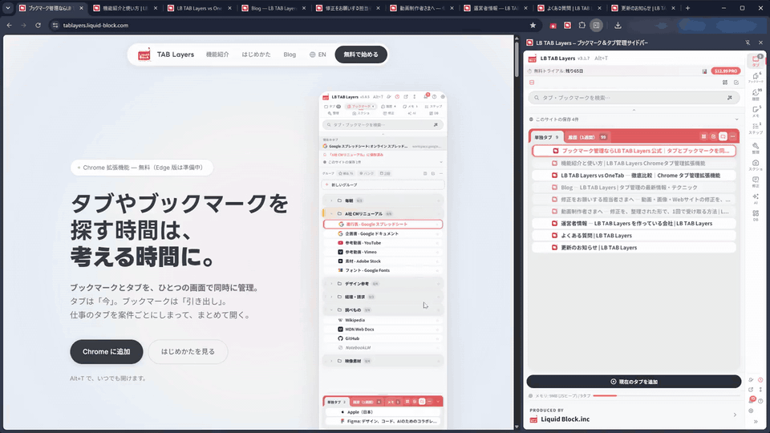
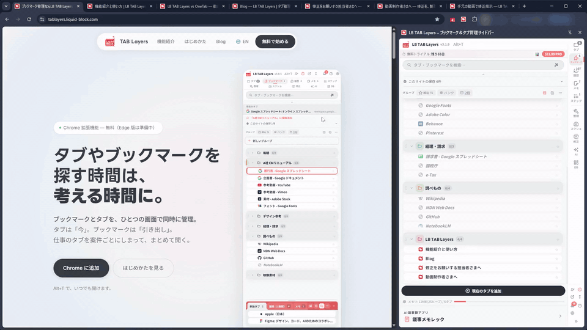
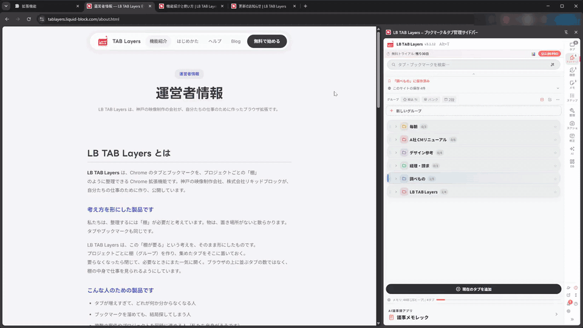

はじめての画面
「どんなときに使いたいですか？」から選ぶと、最初のグループができる
場所：入れた直後／設定 › データ
入れた直後に、「どんなときに使いたいですか？」と聞く画面が出ます。選ぶと、それに合った最初のグループができます。あとから、設定 › データ でもう一度開けます。
「どんなときに使いたいですか？」から選ぶと、最初のグループができる
場所：入れた直後／設定 › データ
入れた直後に、「どんなときに使いたいですか？」と聞く画面が出ます。選ぶと、それに合った最初のグループができます。あとから、設定 › データ でもう一度開けます。
Chrome のフォルダを選んで、グループにする。元に戻せる
場所：最初の画面／設定 › データ
今の Chrome のブックマークのフォルダを選んで、グループにできます。もとのブックマークは消えず、取り込みは元に戻せます。最初の画面、または 設定 › データ から使えます。
HTML・CSV・TXT のブックマークを読み込む
場所：取り込みの画面
取り込みの画面で、HTML・CSV・TXT のファイルから、ブックマークを読み込めます。ほかのブラウザから書き出したブックマークも、取り込めます。
OneTab の書き出しを貼ると、グループになる
場所：設定 › データ
設定 › データ で、OneTab から書き出した一覧を貼ると、グループになります。OneTab にためたタブを、そのまま引き継げます。
この 2 週間の履歴から、よく開くサイトを提案する
場所：設定 › データ
設定 › データ で、この 2 週間の履歴から、よく開くサイトを見つけて、保存の候補として出します。
使った機能が、メダルでたまる（6 章・75 個）。初めての操作には、お祝い
場所：右の列の下
右の列の下のバッジで、できることバッジの帳面が開きます。6 つの章・75 個のバッジがあり、まだ取れていないものは「試す」で、その機能の場所へ案内します。



検索の回数などから、節約できた時間の目安を出す
場所：上のグラフ
パネルの上のグラフを押すと、週間レポートが出ます。検索の回数などから、節約できた時間の目安を見られます。
グループ・メモ・ステップタスクを、ファイルに書き出す・読み込む
場所：設定 › データ
設定 › データ で、グループ・メモ・ステップタスクを、ファイルに書き出して、バックアップにできます。読み込むと、今の内容は上書きされます。
使い方の案内・ガイドの再生・問い合わせのフォーム
場所：右の列の下の「？」
右の列の下の「？」から、使い方の案内・ガイドの再生・お問い合わせのフォームを開けます。
無料の上限、お試しの残り日数、2026年中は1回払いで永続の PRO
場所：上の帯
タブの保存・検索・まとめて開く／閉じる・ブックマークとの同期は、無料で使えます。入れてから 30 日は、PRO の機能もすべて試せます。お試しの残り日数は、パネルの上の帯に出ます。PRO は、2026年12月31日までのご購入なら1回のお支払いで永続ライセンス、2027年1月1日からは自動更新のサブスクリプション（3年 $39.99・年 $19.99・月 $3.33）です。
Brave と Microsoft Edge でも、Chrome ウェブストアから入れて使える
場所：Chrome ウェブストアの LB TAB Layers のページ
Brave と Microsoft Edge でも使えます（2026 年 11 月に、サイドパネル・グループ・▶ で開く・今のブックマークから始める、を確かめました）。どちらも、Chrome ウェブストアの LB TAB Layers のページから入れます。Brave は［Brave に追加］→［拡張機能を追加］。Edge は、［他のストアからの拡張機能を許可する］が出たら［許可］を選び、［Chrome に追加］→［拡張機能の追加］。Microsoft Edge のアドオン ストアには出していません。Google アカウントでログインして使う「Googleカレンダーと同期」「Googleスプレッドシート同期」は、Brave と Edge では使えません。保存先は、そのブラウザのブックマークです。
LB TAB Layers は、Chrome に無料で追加できます。入れたら、Alt+T で、いつでも開けます。
Chrome に無料で追加